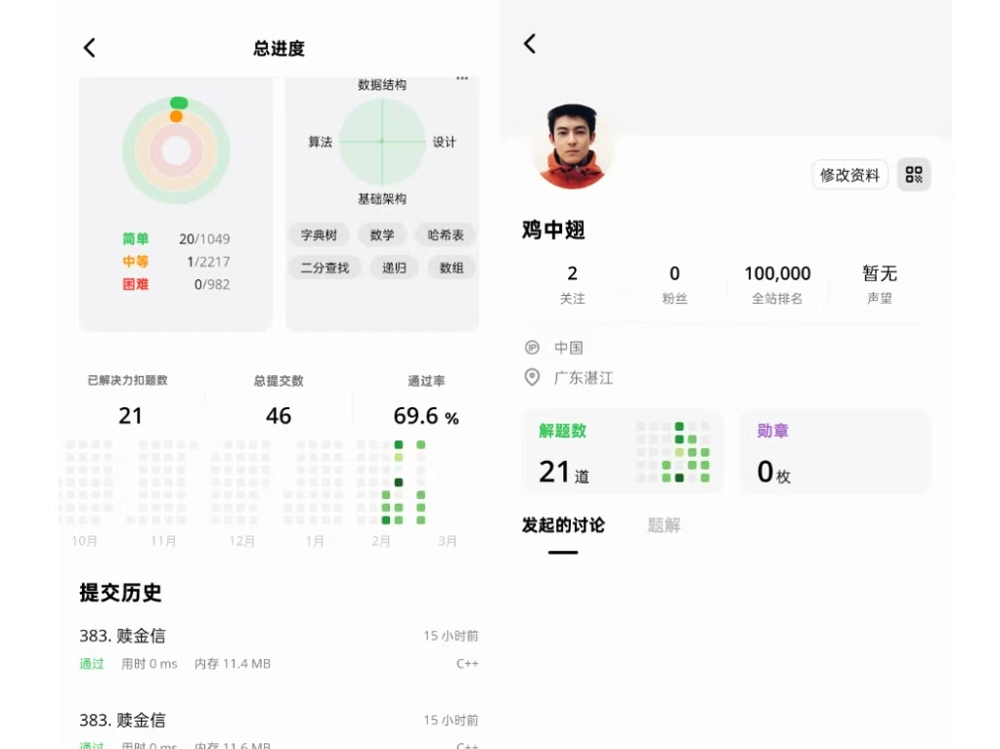

汕头大学 大一新生
我是一名的大一新生，对计算机科学充满热情。通过自学 C++、开发项目和刷算法题，我正在一步步构建自己的技术能力。我的目标是成为一名从事c++后端或者c++游戏引擎开发相关或者嵌入式方面相关的工作。
用 C++ 和 EasyX 开发的图形化贪吃蛇，实现了蛇的移动、碰撞检测、难度调节和记录分数功能。
用 C++ 实现的职工信息增删改查系统，练习了面向对象编程和文件 I/O 操作，了解并熟悉了文件流。
用 C++ 实现的联系人管理系统，初次学习增删查改，了解到后端数据的录入，储存和整理，练习了数组和基础数据结构。
初期学习的练手小项目：用 C++ 实现的几何计算，练习了函数封装。
我正在通过 LeetCode 练习算法和数据结构，目前已完成 16 道题，主要使用 C++ 语言。
